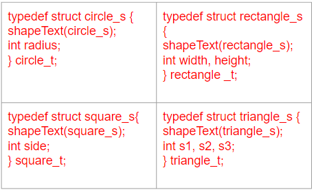
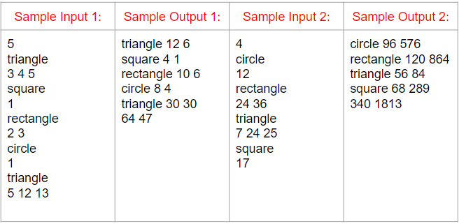

圖形的周長與面積（進階題1）
使用以下 struct 定義 shape(圖形), circle(圓), rectangle(矩形), square(正方形), triangle(三角形)。
圓有半徑，矩形有長寬，正方形有邊長，三角形有三個邊。
計算各圖形周長、面積及所有圖形周長、面積加總。
PI 設 4。
所有長度、計算均以整數處理。
圖形的周長與面積（進階題1）
本題須使用以下 struct定義,以及定義與實做相對的 function pointer 的 function 才計分。
#define shapeText(TYPE) int (*perimeter)(struct TYPE*); \
int (*area)(struct TYPE*);
typedef struct shape_s { shapeText(shape_s); } shape_t;

圖形的周長與面積（進階題1）
圖形的周長與面積（進階題1）

Tips
#include <stdio.h>
#include <string.h>
#include <math.h>
#define shapeText(TYPE) int (*perimeter)(struct TYPE*); \
int (*area)(struct TYPE*);
typedef struct shape_s {
shapeText(shape_s);
} shape_t;
typedef struct circle_s {
shapeText(circle_s);
int radius;
} circle_t;
int CirclePerimeter(circle_t *obj) {}
int CircleArea(circle_t *obj) {}
void CircleNew(circle_t *obj) {
obj->perimeter = CirclePerimeter;
obj->area = CircleArea;
}
int main()
{
circle_t c;
CircleNew(&c);
int radius;
scanf("%d", &radius);
c.radius = radius;
shape_t *sq = (shape_t*)&c;
printf("circle %d %d", sq->perimeter(sq), sq->area(sq));
}
Tips
三角形面積: